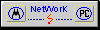

| |

Das ausführliche Inhaltsverzeichniss
Table of Contens


- Inhalt
- Das Inhaltsverzeichniss
Table of Contens
CD/ZIP Service
- DOIT_ST
- Eine Zusammenstellung von Tips & Tricks
A collection of Tips & Tricks
- Autor
- Online-Service
- Download
- Installation
Zur installation der DOIT-Archive
- Information
- Copyright
- Literatur
- Atari ST Series Hardware
- - Atari ST
- Parts
- Spezifikation Atari ST
- Spezifikation Atari STe
- Spezifikation Mega STe
- Startprobleme
- Atari ST Testkit
Kleine Beschreibung des Testkits
Ehemals nur für Händler
- Symtom
- MegaST Bus
Beschreibung des Floppycontrollers
- Stacy
- Stacy Hard Drive
- Stacy Batterie
- Stacy Ram Expansion
- Super Stacy
- Stacy 10Mhz
- STBook
- STBook Expansions Port
- STBook ASCI FDD Port
- STBook external Keypad
- STBook Stromversorgung
- Systemübersicht
- Blitter Patch
- Add 68881 FPU
- Atari TT Series Hardware
-
- Atari TT 030
- TT internal Connectors
- TT Ram Tip
- TT Diskettenlaufwerk
- TT DMA
- TT external SCSI
- TT NVRAM
- TT ECL / TTM195
- TT DIP Switches
- TT AJAX
Floppycontroller
- Milan Hardware
-
- Milan Hardware
- Milan Mainboard
- Milan Hardwareregister
- Milan Audio Hardware
- Milan Video Hardware
- Startrak Hardware
- Milan GEM TV
- Milan Rom Flash
- Milan ISA Bus
- Milan Erweiterungskarten
- Milan PCI Hardware 1
- Milan PCI Hardware 2
- Milan SCSI Hardware
- Milan serielle Schnittstellen
- Milan IDE ZIP Laufwerk
- Milan CD ROM Laufwerk
- 68060 Processor Upgrade For Milan
- Hades Hardware
-
- Hades Soundblaster 128
- Portofolio Hardware
-
- Portofolio Expanderx
- Pin ST Serie
-
- Atari ST MFP
- Atari ST DMA
- Blitter
- MMU
Die MMU, eine Beschreibung
- Shifter
- GLUE
- CPU
- Soundchip
- WD1772 FDC
Ohne Soundchip generell kein Ton
- ACIA
- Keyboad Controller
- Pin TT/STe Serie
-
- GSTMCU
- TT Uhr
- TT 5380 SCSI Controller
- TT 83C30 SCSI Controller
- TT DP8516 HighRes. Videoshifter
- STe Serie MFP 68901
- TT DP8530 HighRes. Oszillator
- TT DMAC Controller
- TT DCU Controller
- TT MCU Controller
- TT Video Controller
- TT Serie FUNNEL
- TT Serie Soundshifter
- TT Serie MCU
- TT Serie SCU

- Atari TOS
- - Betriebssystem
- TOS Historical
- Desktop
- TOS austauschen
- ST Bios
- Umschaltbares Betriebssystem
- ROM TOS
- Mega ST Rom Table
- ROM und RAM Umbau
- PowerOn Reset
- TOS Card 2.06
- Artifex TOS Karte
Eine glänzende Erweiterung
Tips zum Einbau, auch Artifex Karte
- TOS 2.06 Hack
- Uhr Patch
- OS9
- TOS 3.06 auf PAK
- Beschleuniger
- - SpeedUp 16
- MightyMic
- Mach 16
- CyReL CaTTamaran TT030 Accelerator
- Atari 16 MHz Speedup
- 10/12Mhz Umbau
- Multiboard
- HBS640xx
- PAK
- Hypercache
- Turbo 20 / 30
- Board 20
- Ad Speed ST
- AT-Once

- Massenspeicher
- - Ein Diskettenlaufwerk
- Diskettenlaufwerke am Atari ST
- Floppy Jumper
- Drive Select
- Floppyumschaltung
- HD-Floppy Mitsubishi MF355
- FAB HD Modul
- Disketten
- HD Switch
- CD-Treiber
- CD-ROM
- CD Access
- XM 5301 CD-ROM
- Zip-Drive
- Zip-Romport
- HD Disk ST
- HD Disk STe
- HD Modul
- ED Modul
- OMTI Billiglösung
Alles zu dem ehemaligen c't Projekt
- SH204 / SH205
- Parity Gen
Wie man das Parity-Bit auf ältereren Hostadaptern
nachrüstet
- SQ555 Error
- PowerOnReset
- DD-HD Switch
- HD Floppy / MegaST
- CDAR504
- Megafile
- Megafile & CD-Rom
Ein CD-ROM in eine Megafile 44 einbauen..
- Stacy HD replacement
- Floppy Signals
Komplette Beschreibung der Signale
- MegaSTe Harddrive
- Syquest SyJet 1.5 GB
- TT SCSI-Bus Termination
- Vortex HDplus
- Troubleshooting
- Discovery
- IDE Flash Drive

- Speichererweiterungen
- - Speichererweiterung ST
- 2.5 MB RAM
- 1040ST / 4MB
- PS2-1040ST
- PS2 Simm im Atari
- 520STFM Ram
- Ram mit IMP MMU
- 16MB Ram
- Simm Module
- Magnum Ram
- MegaSTe mehr als 4MB Ram
- MegaST aufrüsten
- aixTT Ram
- Mighty-Mic 32B (GE-Soft) Jumper Settings
- SIMM Identification
- MegTT Jumper Settings
- Schnittstellen
-
- Keyboard
- How to connect a STe-Keyboard
- PC Keyboard Interface
- Druckerschnittstelle
- DMA/SCSI Hostadapter
- Stecker
- Atari, Mac und PC seriell
- RS-Turbo
- RSVE
- 38400bps
- ESCC
Drei Artikel um die serielle Schnittstelle zu beschleunigen
- RSFI
- Mäuse & Adapter
- Mäuse überprüfen
- Logitech Maus anschliessen
- Midi-Schnittstelle
- Extra Midi
- Midi3 Interface
- Der Romport
- Epromkarten am Romport
- Romportbuffer
Den Romport elektronisch verbessern
- Atari, Mac und PC seriell
Lapidare Dinge, oft aber nicht gewust
- I/O-Interface
- SLM804
- SLM 605
- Laser & Hard Drive DIP Switch
- MegaSTE Bus
- ACSI-Buffer
- MFP-2
- Cardridge Port Interface
- IDE Interface internal
- TT serielle Schnittstellen
- TT Riebl Karte
- Second serial port
- DMA Port
- Netzteil
- - PSU 1040 STF
- 520ST to PC PSU
- 520STFM PSU
- Stacy PSU
- TT PSU
- Atari PSU
- PSU Ersatz STe/MSTe
- PSU Temperatur
- ATX PSU

- Verbindungskabel
- - SCSI 50/25
- DMA Kabel
- ST to PC
- PARCOPY Cable
- Atari <> Portofolio
- Atari <> SpeedDragon
- BLITZ Floppykabel
- Multiplayer Joystickadapter
- Sharp / Atari
- Video
- - SM124 Monitor
- SM124 Tip
- SM124 Bild vergrössern
- SC1224 Monitor
- ST/TT Monitorpinbelegung
- 1040STE Monitorproblem
- VGA-Umschalter
- ST to VGA
- ST MONO to VGA
- ST to SCART
- ST to Commodore 1084
- ST Mono/Color
- RGB / FBAS-Wandler
- RGB / VGA-Wandler
- AutoMonitor Switch
- Multisync. Switch
- 260/520 Video
- BAS Video
- Shifter
Diverse Feinheiten zum Videoshifter
- SVHS
- Matrix Grafikkarte
- Connect old Displays
- TT to Multisync
- Syncronisation am GLUE
- Composit Video
- TV-Modulator
- Overscan
- TT Overscan
- Matgraph C110ZV
- Lacescan
- Grazy Dots
- Panther
- Nova
- Odin
- Viking
- Audio
- - Audio allgemein
Oder wie der Ton im ST gemacht wird
- Tweety Board
- ST Stereo
- Startrak
- WaveBlaster
- Audio Brummen
- Specials
- - METEX DMM Multimeter
Messgeräte am ST anschliessen
- Ring On
- Junior Prommer
- Junior Prommer PLCC Adapter
- Dela Prommer - Easybank
- Lüfterregelung
- Centronics-Buffer
- RS232 Tester
- RS232 Wandler
- Einschaltverzögerung
- Fischertechnik
- WaveBlaster
Add a Waveblaster Soundcard to your ST
- Videotextdecoder
- Eprombank 128K
- HAM-Interfaces
Homebrewed Amateur Radio Interfaces
- Exposure Lichtsteuerung
- Laser & Hard Drive DIP Switch
- Scanner am Romport
- Scanner
- Mustek Paragon Scanner
- YAMI - Yet Another Mouse Interface
- Atari Portofolio
- SLM 605
- Galaxy Karte
- Musiker Dongle
- Wacom
- SuperCharger
- Uhr
- Systemsoftware
- - SPIN! CD Driver
- HDDriver
Hier findet man auch die moeglichen Partitionsgroessen.
- ExtenDOS
Alles rund um ExtenDOS.
- STinG to LAN
Wie man STinG dazu verwendet einen Atari in ein Ethetnet
einzubinden.
- MagiC Kernel Fehlermeldungen
- Datenübertragung

- Diskmagazine
-
- Revolution
- Classic Atari
Nostalgie pur, die meisten Magazine existieren seit Jahren nicht
mehr.
- MyAtari Online
- ST-Computer

- Internet
-
- STinG
- IConnect
- UUCP
- Gebührenimpulsfilter
- DSL

- Network
-
- Atari NetWork
- Ethernet Project am Romport
- Ethernet Project ASCI port
- MagicNet installieren
- MidiCom-Romportlösung
- Midi Network
- Networking my STe

- Anhang
- - Der Anfang..
- Bildformate
- BEST-Electronics
- Stecker
- Fehler und Bomben
- SCSI-Sense Codes
- Händler
- Scancode
- Tastatur Shortcut
- Elektronische Arbeiten
- Cheatmodes
- Y2K
- Schaltplan
|